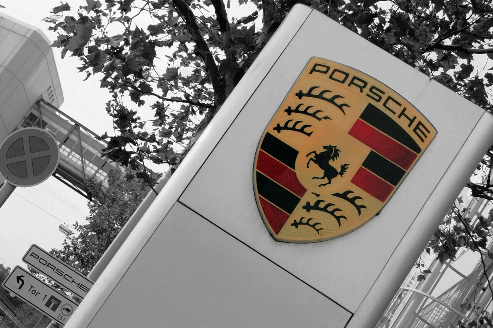
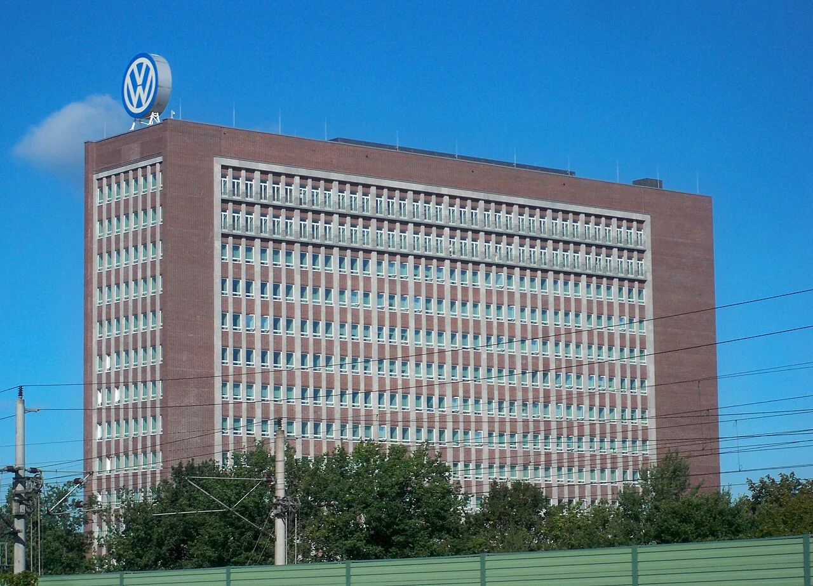
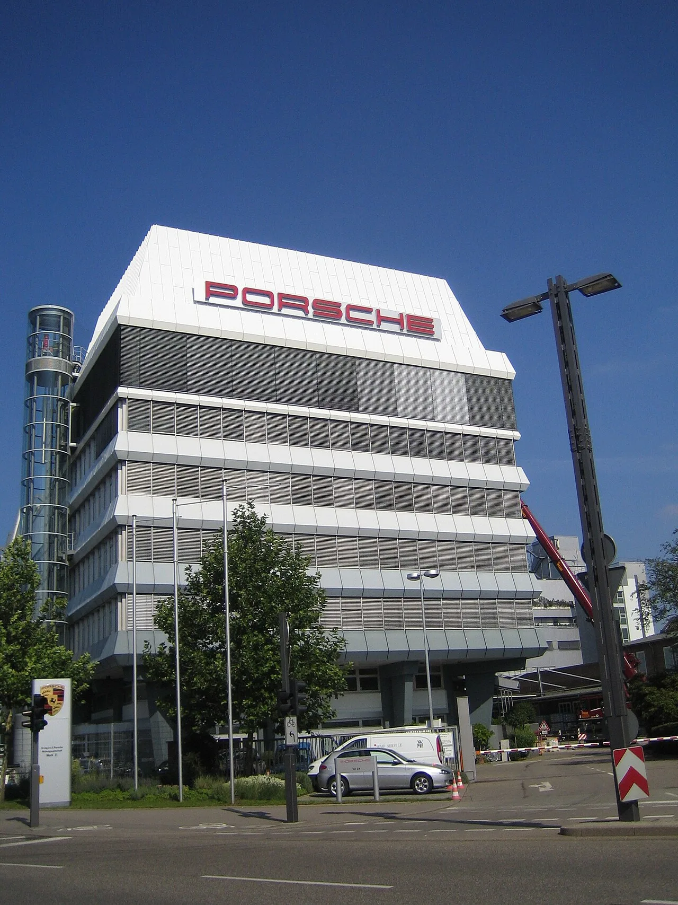
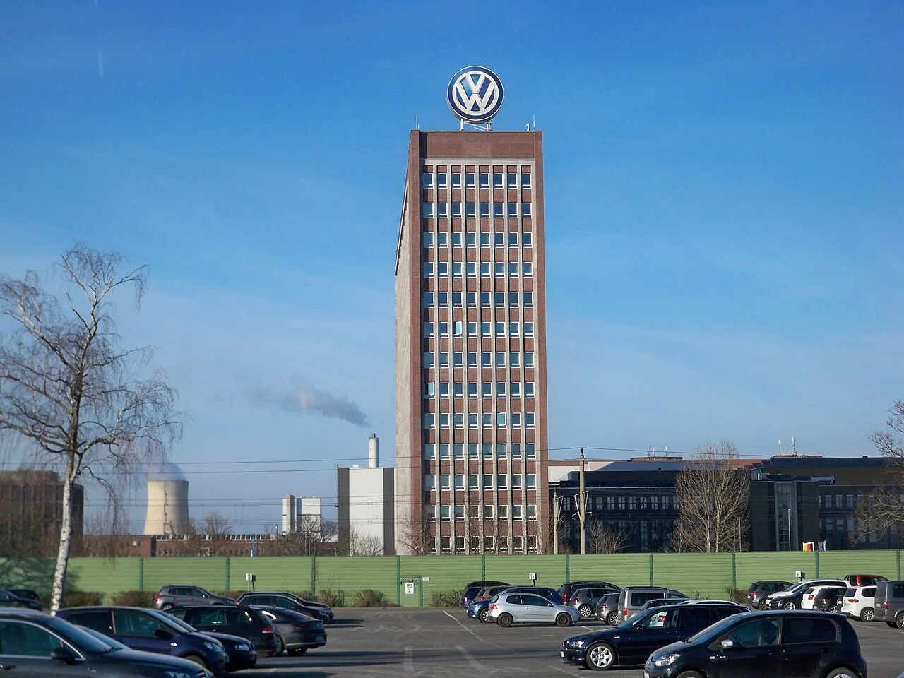

▲ 포르쉐의 심장부인 추펜하우젠 공장 정문 — 전동화 전략 후퇴와 중국 수요 급감의 여파가 이곳까지 미쳤다 ⓒ Wikimedia Commons
폭스바겐그룹이 9월 18일(현지시간) 투자자들에게 충격적인 소식을 전했다. 포르쉐의 중장기 사업가치를 새로 평가한 결과 약 60억 유로(약 6.9조 원) 규모의 영업권 감액손실이 발생했고, 여기에 구조조정·중국 자산 손상 등을 더해 총 100억 유로(약 11.5조 원, 115억 달러)에 이르는 일회성 비용을 반영한다는 내용이었다.
이 여파로 폭스바겐그룹의 2026년 영업이익률 전망치는 기존 4.0~5.5%에서 최대 1%로 대폭 낮아졌다. 그룹 지분의 75.4%를 보유한 자회사 포르쉐 한 곳의 부진이 모기업 전체 실적 전망을 사실상 무너뜨린 셈이다.
1. 무슨 일이 있었나 — 100억 유로 규모 일회성 비용
폭스바겐그룹은 9월 18일 임시 이사회를 거쳐 실적 전망 수정치를 발표했다. 핵심은 포르쉐 브랜드의 중장기 사업 전망을 새로 반영하면서 발생한 대규모 영업권 감액손실이다.
| 항목 | 규모(추정) | 내용 |
|---|---|---|
| 포르쉐 영업권 감액손실 | 약 60억 유로(약 69억 달러) | 포르쉐 중장기 사업가치 재평가에 따른 비현금성 손상차손 |
| 구조조정·조기퇴직 비용 | 약 20억 유로(약 23억 달러) | 독일 오스나브뤼크 공장 매각, 조기퇴직 프로그램 확대 |
| 중국 자산 손상 | 나머지 항목에 포함 | 중국 내 완전 연결 자회사 자산에 대한 추가 손상차손 |
| 총계 | 약 100억 유로(115억 달러) | 2026년 실적에 일회성 비용으로 전액 반영 |
이번 감액손실은 실제 현금이 빠져나가는 손실이 아니라 회계상 자산가치 재평가다. 하지만 시장이 주목한 것은 액수 자체보다, 그만큼 포르쉐의 향후 수익 전망을 폭스바겐 스스로 낮춰 잡았다는 신호였다.
2. 왜 하필 포르쉐인가 — 중국 수요 붕괴와 관세, 그리고 실패한 전동화 베팅
포르쉐의 위기는 한 가지 원인이 아니라 여러 악재가 동시에 겹친 결과다. 그중에서도 가장 큰 타격은 중국 시장에서 왔다.
📍 중국, 더 이상 '효자 시장'이 아니다
포르쉐에게 중국은 한때 전 세계에서 가장 큰 단일 시장이었다. 그러나 최근 몇 년 사이 중국 로컬 브랜드의 급부상과 수입 럭셔리카 수요 자체의 냉각이 맞물리면서 포르쉐의 중국 판매는 크게 위축됐다. 여기에 미국이 수입차에 부과한 관세까지 더해지며, 포르쉐를 지탱하던 두 핵심 시장(중국·미국)에서 동시에 수익성이 흔들리는 상황이 벌어졌다.

▲ 볼프스부르크의 폭스바겐그룹 본사 — 포르쉐 지분 75.4%를 보유한 모기업으로서 이번 감액손실의 충격을 고스란히 떠안았다 ⓒ Wikimedia Commons
더 뼈아픈 대목은 포르쉐 스스로 택했던 전동화 베팅이 부메랑으로 돌아왔다는 점이다. 포르쉐는 차세대 타이칸과 파나메라 후속 모델을 순수 전기차 전용 플랫폼으로 개발하며 대규모 투자를 집행해왔다. 하지만 배터리 전기차에 대한 고급차 수요가 예상보다 빠르게 식으면서, 회사는 결국 이 전략을 수정할 수밖에 없었다.
자세한 실적 전망 수정 내용은 폭스바겐그룹 발표 원문 기반 외신 보도에서 확인할 수 있다. Automotive World 원문 기사 바로가기
3. 폭스바겐그룹 전체 실적에 미치는 영향
포르쉐 한 브랜드의 문제가 그룹 전체의 수익성 지표를 뒤흔들었다. 폭스바겐그룹은 아우디·스코다·세아트·트럭 부문 등 여러 브랜드를 거느리고 있지만, 포르쉐가 차지하는 이익 기여도가 워낙 컸던 만큼 이번 감액손실의 파급력도 그만큼 컸다.
✅ 이번 발표로 달라진 숫자들
· 2026년 그룹 영업이익률 전망: 4.0~5.5% → 최대 1%
· 포르쉐 자동차 부문 영업이익률: 기존 목표 14.5~16.5%에서 이미 10.5~12.5%로 하향된 데 이어 추가 악화
· 폭스바겐그룹 주가: 연초 대비 약 30% 하락
· 유로스톡스50 지수 편입: 15년 만에 퇴출 — 시가총액 기준 미달
특히 유로스톡스50 퇴출은 상징적인 사건으로 받아들여진다. 이 지수를 추종하는 펀드들이 보유 주식을 매도해야 하는 구조이기 때문에, 이미 약세인 주가에 추가적인 하방 압력이 가해질 수 있다는 우려도 나온다.
📍 감액손실은 '현금 손실'이 아니지만…
회계상 영업권 감액손실은 실제 현금 유출을 동반하지 않는다. 하지만 투자자들이 우려하는 것은 손실 규모 자체보다 폭스바겐그룹이 포르쉐의 미래 수익 창출 능력을 스스로 하향 조정했다는 사실이다. 이는 향후 배당, 신용등급, 신규 투자 여력에도 연쇄적으로 영향을 줄 수 있다.
4. 구조조정 — 포르쉐 4,100명 추가 감원, 오스나브뤼크 공장 매각
비용 절감을 위한 구조조정도 함께 발표됐다. 폭스바겐 감독이사회는 포르쉐 브랜드에서 기존에 합의된 9,000명 감원에 더해 약 4,100명을 추가로 감원하는 방안에 합의한 것으로 알려졌다. 이는 포르쉐의 관리비 부담 약 7억 유로를 줄이기 위한 조치로 전해진다.
| 항목 | 내용 |
|---|---|
| 포르쉐 추가 감원 | 기존 9,000명 + 신규 약 4,100명 — 관리비 약 7억 유로 절감 목표 |
| 오스나브뤼크 공장 | 매각 추진 — 관련 조기퇴직 프로그램 비용 반영 |
| 중국 딜러 네트워크 | 수요 감소에 맞춰 지속적으로 축소 중 |
| 그룹 전체 감원(별도) | 2026년 들어 독일 공장 중심으로 약 5만 명 규모 인력 조정 진행 |

▲ 포르쉐 추펜하우젠 제2공장 — 이번 구조조정으로 관리 인력 4,100명이 추가로 줄어들 전망이다 ⓒ Wikimedia Commons
✅ 구조조정이 노리는 것
· 고정비 구조 개선 — 수요가 줄어든 상황에서 과잉 생산·관리 인력 축소
· 중국 사업 재편 — 팔리지 않는 딜러망을 정리하고 현지 전략 재수립
· 미래 투자 재원 확보 — 감액손실로 줄어든 이익 여력을 보전하기 위한 비용 절감
5. 포르쉐의 방향 전환 — 전기차 후퇴, 내연기관·하이브리드로 회귀
포르쉐는 이번 위기를 계기로 제품 전략을 상당 부분 되돌리고 있다. 올리버 블루메 최고경영자는 앞서 있었던 전략 수정 발표에서 "자동차 시장 환경이 급격히 변했다"며 "배타적인 순수 전기 스포츠카에 대한 수요가 뚜렷하게 줄었다"고 밝힌 바 있다.
✅ 달라진 포르쉐 제품 전략
· 차세대 타이칸·파나메라 후속 EV — 소프트웨어 중심 신규 플랫폼(SSP 스포츠)과 함께 2030년대까지 개발 연기
· 카이엔·파나메라 — 내연기관·플러그인하이브리드 라인업을 2030년대까지 유지
· 신형 대형 SUV(K1, 카이엔 상위 모델) — 당초 순수 전기 전용으로 계획했으나 내연기관·PHEV 버전을 먼저 출시하는 것으로 변경
· 718 박스터·카이맨 전기 모델 — 출시 시점이 2027년 이후로 재조정
· 수익성 목표: 자동차 부문 매출은 370억~380억 유로 수준 유지 전망이나, 매출이익률 목표는 기존 14.5~16.5%에서 10.5~12.5%로 대폭 하향
즉 포르쉐는 전동화 선도 브랜드라는 이미지 대신, 당분간 내연기관·하이브리드로 수익을 지키는 쪽을 택한 셈이다. 이는 폭스바겐그룹 전체의 전동화 로드맵에도 영향을 줄 수밖에 없는 결정이다.

▲ 볼프스부르크의 폭스바겐 브랜드 타워 — 포르쉐발 손실은 그룹 전체의 전동화 로드맵 재검토로 이어지고 있다 ⓒ Wikimedia Commons
6. 요약
폭스바겐그룹은 포르쉐의 중장기 사업가치 재평가에 따른 영업권 감액손실 약 60억 유로를 포함해 총 100억 유로(115억 달러, 약 11.5조 원)의 일회성 비용을 반영한다고 발표했다. 이로 인해 2026년 그룹 영업이익률 전망은 기존 4.0~5.5%에서 최대 1%로 낮아졌다.
원인은 중국 수요 붕괴, 미국 관세, 그리고 포르쉐가 추진했던 전동화 전략의 실패가 복합적으로 작용한 결과다. 포르쉐는 이미 확정된 9,000명 감원에 더해 4,100명을 추가로 감원하고, 오스나브뤼크 공장 매각과 조기퇴직 프로그램 확대 등 강도 높은 구조조정에 나섰다.
동시에 포르쉐는 순수 전기차 중심 전략에서 벗어나 내연기관·하이브리드 병행 체제로 회귀하고 있다. 차세대 타이칸·파나메라 EV는 2030년대로 개발이 미뤄졌고, 신형 대형 SUV와 718 후속 모델도 내연기관·PHEV 버전을 먼저 선보이는 쪽으로 계획이 수정됐다. 폭스바겐 주가는 연초 대비 약 30% 하락했고, 15년 만에 유로스톡스50 지수에서도 퇴출됐다.